animation
The animate() function illustrated by a water particle simulation.
|

callback
Using the Qt signal-slot mechanism to connect a QGLViewer to your scene.
|

cameraLight
This example shows how to position a GL_LIGHT on the camera.
|
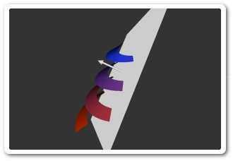
clippingPlane
A clipping plane is manipulated using a ManipulatedFrame
|
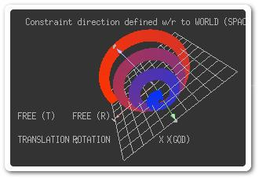
constrainedCamera
Constraints applied on the Camera Frame to limit its translation and/or rotation.
|

constrainedFrame
Constraints can limit the translation and/or rotation of a (Manipulated)Frame.
|

drawLight
The drawLight() function is a light debugging tool.
|

fastDraw
The fastDraw() function enables interactivity even with large scenes.
|

frameTransform
Coordinate transformation between different Frames.
|

frustumCulling
Frustum culling using getFrustumPlanesCoefficients.
|
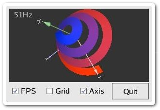
interface
Adding a graphical user interface around a QGLViewer.
|

keyFrames
The KeyFrameInterpolator test example.
|

luxo
A more complex example that combines ManipulatedFrames, selection and constraints.
|

mouseGrabber
MouseGrabbers enable complex mouse interaction.
|

multiSelect
Customized select() function that enables the selection of several objects.
|

multiView
A multi-view application, with constrained camera displacements.
|

overpainting
Mixing OpenGL (3D) and QPainter (2D) drawing in the same viewer.
|
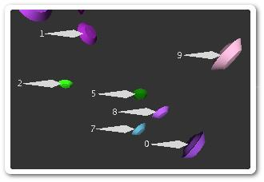
screenCoordSystem
A saucers control viewer that illustrates the screen coordinate system feature.
|

standardCamera
A 'standard' Camera with fixed near and far planes.
|

stereoViewer
Simply press S to toggle stereo display (if supported).
|
|

3dsViewer
The LGPL lib3ds library is used to load and display a 3ds scene.
|
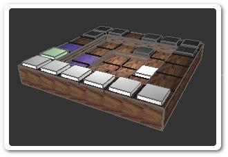
agora
Implementation of the game of Agora.
|

anaglyph
Displays a scene in pseudo-stereo using anaglyph.
|
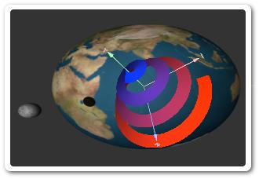
backgroundImage
Displays a background image in the viewer.
|
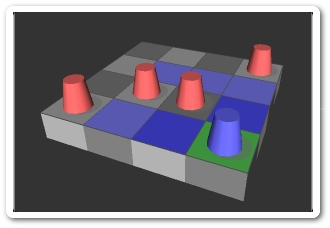
blobWar
Implementation of the game of BlobWar.
|
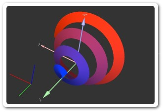
cornerAxis
Displays a world axis in the lower-left corner of the window.
|

dvonn
Implementation of the game of Dvonn.
|
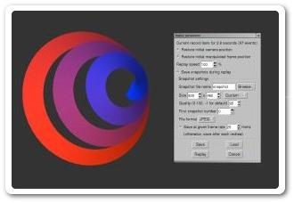
eventRecorder
Records a scenario that can be replayed and converted into a movie.
|
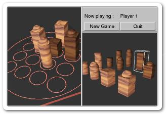
quarto
A simulation of the game of Quarto.
|

terrain
A random fractal terrain with trees, animated water, sky and shadows.
|
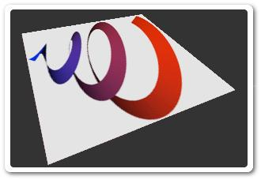
textureViewer
Loads an image file and texture maps a polygon with it.
|

thumbnail
Displays an alternative 3D view in a corner thumbnail.
|